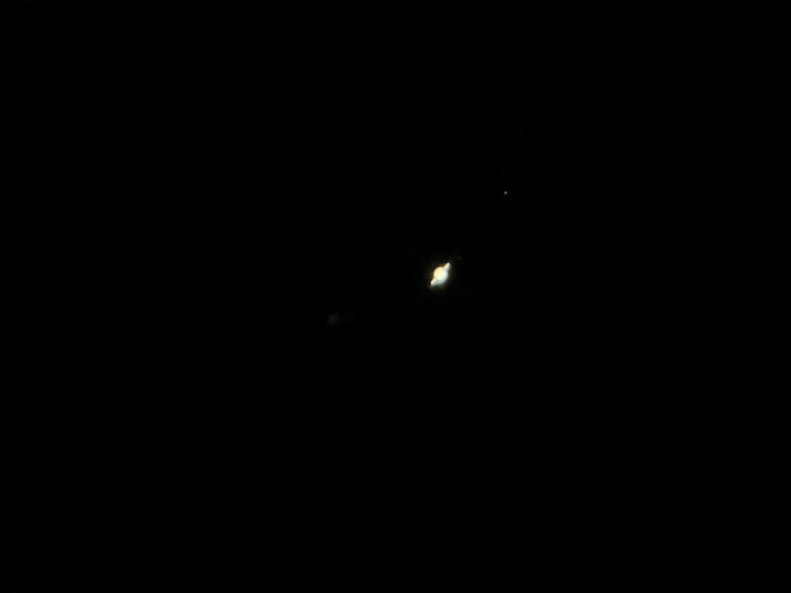
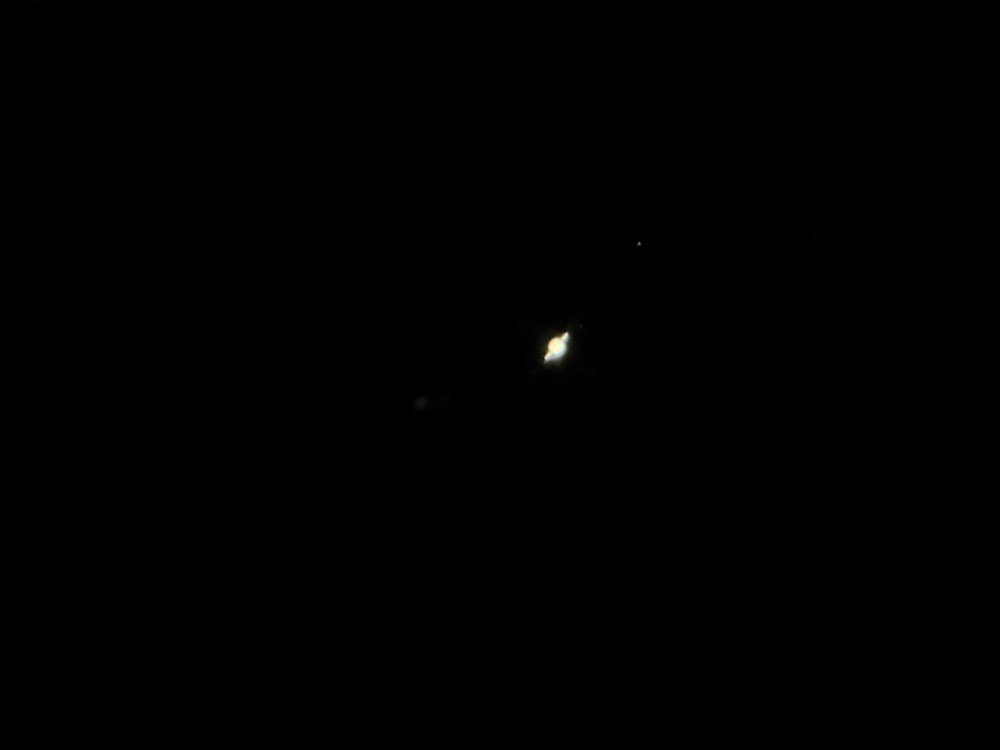

A few years ago I got really big into astronomy, and I still really enjoy using my telescope when the weather is nice. There's something really magical about seeing space live. Pictures of planets and galaxies are cool, but seeing Saturn's rings or the Orion nebula with your own eyes is something truly special. I tend to dive head first into new hobbies, so after playing with a toy telescope for a while, I decided to buy an 8" (diameter) dobsonian telescope. I found a used Orion SkyQuest XT8+ and it was a massive upgrade. It collects massive amounts of light and gives great detail on planets and star clusters, shows nebulae reasonably well, and has incredible detail on the moon. I've experimented with some astrophotography, mainly through the telescope, but also with my DSLR. Here's my telescope and some pictures I've taken.

 
